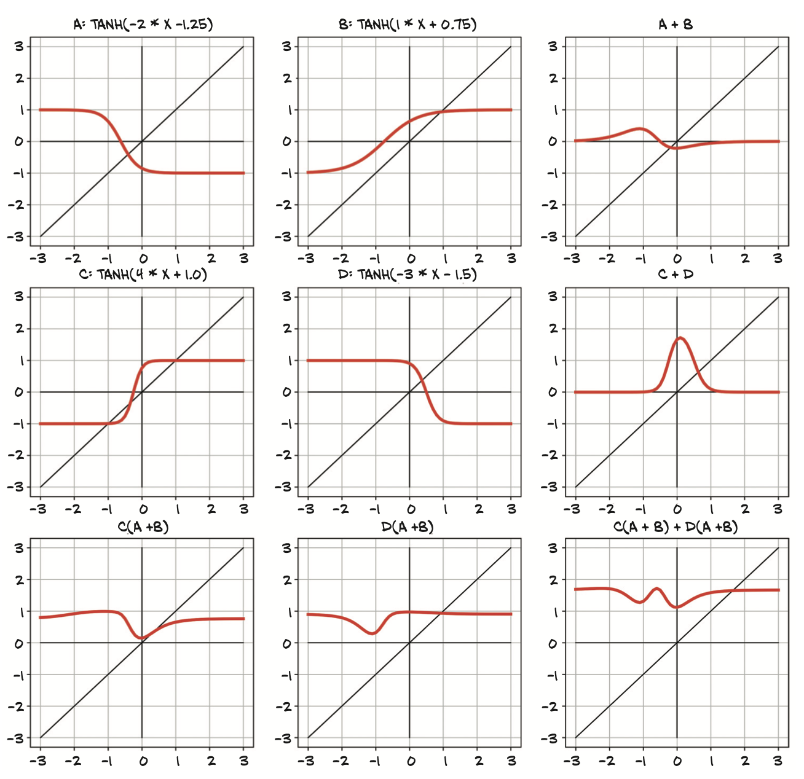
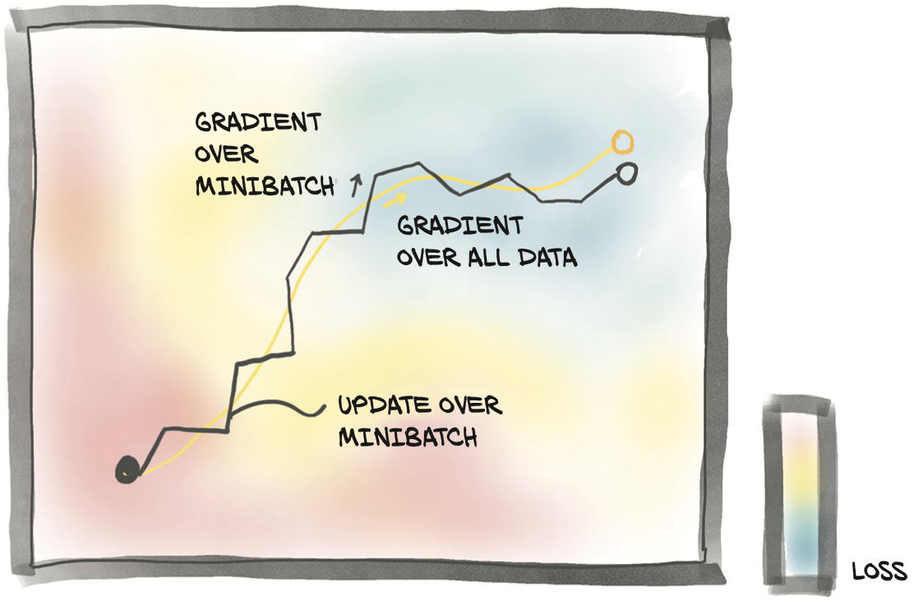
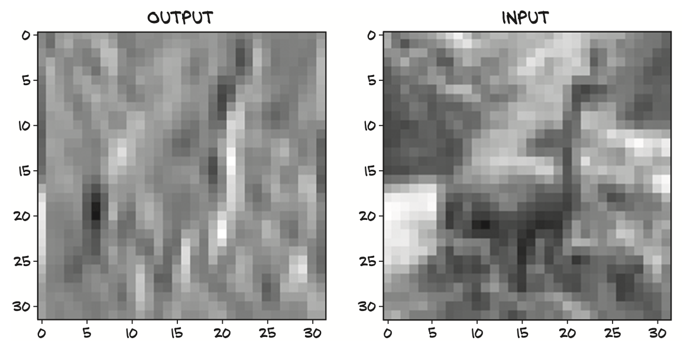
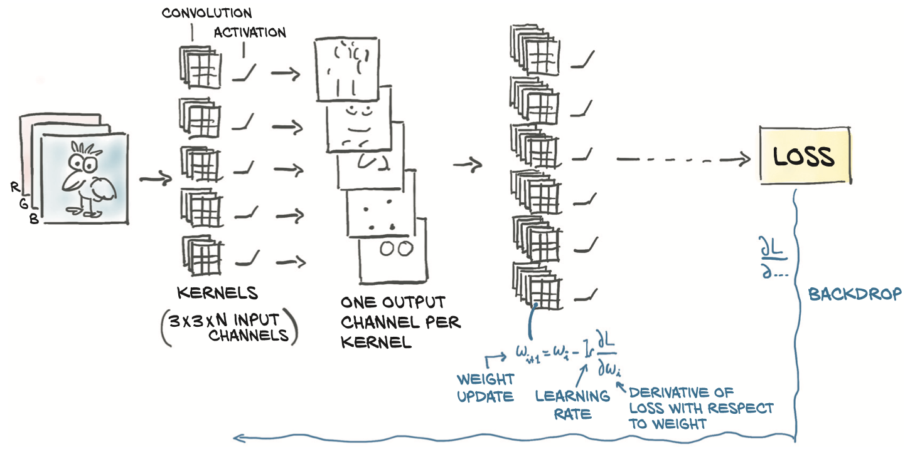
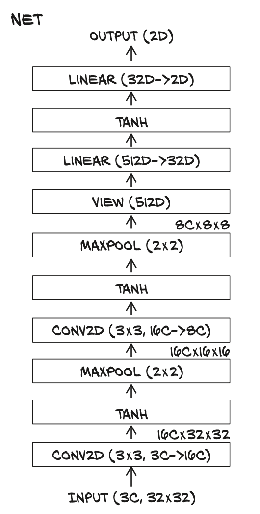

Deep Learning with PyTorch -- Part 1 Core PyTorch (C6-C8)
Chapter 6 Using a neural network to fit the data
- Nonlinear activation functions as the key difference compared with linear models
- Working with PyTorch’s nn module
- Solving a linear-fit problem with a neural network
In this chapter, we will make some changes to our model architecture: we’re going to implement a full artificial neural network to solve our temperature-conversion problem. We’ll continue using our training loop from the last chapter, along with our Fahrenheit-to-Celsius samples split into training and validation sets.
6.1 Artificial neurons
As a matter of fact, although the initial models were inspired by neuroscience, modern artificial neural networks bear only a slight resemblance to the mechanisms of neurons in the brain. It seems likely that both artificial and physiological neural networks use vaguely similar mathematical strategies for approximating complicated functions because that family of strategies works very effectively. Mathematically, we can write this out as o = f(w * x + b), with x as our input, w our weight or scaling factor, and b as our bias or offset. f is our activation function, set to the hyperbolic tangent, or tanh function here.
6.1.1 Composing a multilayer network
A multilayer neural network, as represented in figure 6.3, is made up of a composition of functions like those we just discussed. where the output of a layer of neurons is used as an input for the following layer. Remember that w_0 here is a matrix, and x is a vector
1 | x_1 = f(w_0 * x + b_0) |
6.1.2 Understanding the error function
An important difference between our earlier linear model and what we’ll actually be using for deep learning is the shape of the error function. Our linear model and error-squared loss function had a convex error curve with a singular, clearly defined minimum. If we were to use other methods, we could solve for the parameters mini- mizing the error function automatically and definitively.
Neural networks do not have that same property of a convex error surface, even when using the same error-squared loss function. There’s no single right answer for each parameter we’re attempting to approximate. Instead, we are trying to get all of the parameters, when acting in concert, to produce a useful output. Since that useful output is only going to approximate the truth, there will be some level of imperfection.
A big part of the reason neural networks have non-convex error surfaces is due to the activation function. The ability of an ensemble of neurons to approximate a very wide range of useful functions depends on the combination of the linear and nonlinear behavior inherent to each neuron.
6.1.3 All we need is activation
As we have seen, the simplest unit in (deep) neural networks is a linear operation (scaling + offset) followed by an activation function. The activation function plays two important roles:
- In the inner parts of the model, it allows the output function to have different slopes at different values—something a linear function by definition cannot do. By trickily composing these differently sloped parts for many outputs, neural networks can approximate arbitrary functions, as we will see in section 6.1.6.2
- At the last layer of the network, it has the role of concentrating the outputs of the preceding linear operation into a given range.
CAPPING THE OUTPUT RANGE
We want to firmly constrain the output of our linear operation to a specific range so that the consumer of this output doesn’t have to handle numerical inputs of puppies at 12/10, bears at –10, and garbage trucks at –1,000.
One possibility is to just cap the output values: anything below 0 is set to 0, and any- thing above 10 is set to 10. That’s a simple activation function called torch.nn.Hardtanh, but note that the default range is –1 to +1.
COMPRESSING THE OUTPUT RANGE
Another family of functions that work well is torch.nn.Sigmoid, which includes 1 / (1 + e ** -x), torch.tanh, and others. These functions have a curve that asymptotically approaches 0 or –1 as x goes to negative infinity, approaches 1 as x increases, and have a mostly constant slope at x == 0. Conceptually, functions shaped this way work well because there’s an area in the middle of our linear function’s output that our neuron will be sensitive to, while everything else gets lumped next to the boundary values.
As we can see in figure 6.4, our garbage truck gets a score of –0.97, while bears and foxes and wolves end up somewhere in the –0.3 to 0.3 range. This results in garbage trucks being flagged as “not dogs,” our good dog mapping to “clearly a dog,” and our bear ending up somewhere in the middle.
With the bear in the sensitive range, small changes to the bear will result in a noticeable change to the result.
6.1.4 More activation functions
There are quite a few activation functions, some of which are shown in figure 6.5. In the first column, we see the smooth functions Tanh and Softplus, while the second column has “hard” versions of the activation functions to their left: Hardtanh and ReLU(rectified linear unit) .
ReLU (for rectified linear unit) is currently considered one of the best-performing general activation functions; The Sigmoid activation function, also known as the logistic function, was widely used in early deep learning work but has since fallen out of common use except where we explicitly want to move to the 0...1 range: for example, when the output should be a probability. Finally, the LeakyReLU function modifies the standard ReLU to have a small positive slope, rather than being strictly zero for negative inputs (typically this slope is 0.01, but it’s shown here with slope 0.1 for clarity).
6.1.5 Choosing the best activation function
We’re going to discuss some generalities about activation functions that can probably be trivially disproved in the specific. That said, by definition, activation functions
- Are nonlinear. Repeated applications of (w*x+b) without an activation function results in a function of the same (affine linear) form. The nonlinearity allows the overall network to approximate more complex functions.
- Are differentiable, so that gradients can be computed through them. Point discontinuities, as we can see in Hardtanh or ReLU, are fine.
Often (but far from universally so), the activation function will have at least one of these:
- A lower bound that is approached (or met) as the input goes to negative infinity
- A similar-but-inverse upper bound for positive infinity
Put together, all this results in a pretty powerful mechanism: we’re saying that in a network built out of linear + activation units, when different inputs are presented to the network
different units will respond in different ranges for the same inputs
the errors associated with those inputs will primarily affect the neurons operating in the sensitive range, leaving other units more or less unaffected by the learning process.
In addition, thanks to the fact that derivatives of the activation with respect to its inputs are often close to 1 in the sensitive range, estimating the parameters of the linear transformation through gradient descent for the units that operate in that range will look a lot like the linear fit we have seen previously.
We are starting to get a deeper intuition for how joining many linear + activation units in parallel and stacking them one after the other leads us to a mathematical object that is capable of approximating complicated functions.
6.1.6 What learning means for a neural network
What makes using deep neural networks so attractive is that it saves us from worrying too much about the exact function that represents our data.With a deep neural network model, we have a universal approximator and a method to estimate its parameters. This approximator can be customized to our needs, in terms of model capacity and its ability to model complicated input/output relationships, just by composing simple building blocks.

The four upper-left graphs show four neurons—A, B, C, and D—each with its own (arbitrarily chosen) weight and bias. Each neuron uses the Tanh activation function with a min of –1 and a max of 1. The varied weights and biases move the center point and change how drastically the transition from min to max happens, but they clearly all have the same general shape. The columns to the right of those show both pairs of neurons added together (A + B and then C + D). A + B shows a slight S curve, with the extremes approaching 0, but both a positive bump and a negative bump in the middle. Conversely, C + D has only a large positive bump, which peaks at a higher value than our single-neuron max of 1.
6.2 The PyTorch nn module
PyTorch has a whole submodule dedicated to neural networks, called torch.nn. It contains the building blocks needed to create all sorts of neural network architectures. Those building blocks are called modules in PyTorch parlance (such building blocks are often referred to as layers in other frameworks). A PyTorch module is a Python class deriving from the nn.Module base class.
NOTE The submodules must be top-level attributes, not buried inside list or dict instances! Otherwise, the optimizer will not be able to locate the submodules (and, hence, their parameters). For situations where your model requires a list or dict of submodules, PyTorch provides nn.ModuleList and nn.ModuleDict.
6.2.1 Using call rather than forward
All PyTorch-provided subclasses of nn.Module have their __call__ method defined. This allows us to instantiate an nn.Linear and call it as if it was a function
1 | # In[5]: |
Calling an instance of nn.Module with a set of arguments ends up calling a method named forward with the same arguments. The forward method is what executes the forward computation, while __call__ does other rather important chores before and after calling forward. So, it is technically possible to call forward directly, and it will produce the same output as __call__, but this should not be done from user code:
1 | y = model(x) #Correct! |
Here’s the implementation of Module._call_
1 | def __call__(self, *input, **kwargs): |
As we can see, there are a lot of hooks that won’t get called properly if we just use .forward(...)directly.
6.2.2 Returning to the linear model
The constructor to nn.Linear accepts three arguments: the number of input features, the number of output features, and whether the linear model includes a bias or not (defaulting to True, here):
1 | # In[5]: |
PyTorch nn.Module and its subclasses are designed to do so on multiple samples at the same time. To accommodate multiple samples, modules expect the zeroth dimen- sion of the input to be the number of samples in the batch.
BATCHING INPUTS
Any module in nn is written to produce outputs for a batch of multiple inputs at the same time. Thus, assuming we need to run nn.Linear on 10 samples, we can create an input tensor of size B × Nin, where B is the size of the batch and Nin is the number of input features, and run it once through the model. For example:
1 | # In[9]: |
OPTIMIZING BATCHES
The reason we want to do this batching is multifaceted.
- One big motivation is to make sure the computation we’re asking for is big enough to saturate the computing resources we’re using to perform the computation. GPUs in particular are highly parallelized, so a single input on a small model will leave most of the computing units idle. By providing batches of inputs, the calculation can be spread across the otherwise-idle units, which means the batched results come back just as quickly as a single result would.
- Another benefit is that some advanced models use statistical information from the entire batch, and those statistics get better with larger batch sizes.
We reshape our B inputs to B × Nin, where Nin is 1. That is easily done with unsqueeze:
1 | t_c = [0.5, 14.0, 15.0, 28.0, 11.0, 8.0, 3.0, -4.0, 6.0, 13.0, 21.0] |
When training_loss.backward() is called, grad is accumulated on the leaf nodes of the graph, which are precisely the parameters that were passed to the optimizer.
At this point, the SGD optimizer has everything it needs. When optimizer.step() is called, it will iterate through each Parameter and change it by an amount proportional to what is stored in its grad attribute. Pretty clean design.
1 | def training_loop(n_epochs, optimizer, model, loss_fn, t_u_train, t_u_val, t_c_train, t_c_val): |
There’s one last bit that we can leverage from torch.nn: the loss. Indeed, nn comes with several common loss functions, among them nn.MSELoss (MSE stands for Mean Square Error), which is exactly what we defined earlier as our loss_fn. Loss functions in nn are still subclasses of nn.Module, so we will create an instance and call it as a function.
1 | linear_model = nn.Linear(1, 1) |
6.3 Finally a neural network
There’s one last step left to take: replacing our linear model with a neural network as our approximating function.
6.3.1 Replacing the linear model
Let’s build the simplest possible neural network: a linear module, followed by an activation function, feeding into another linear module. The first linear + activation layer is commonly referred to as a hidden layer for historical reasons, since its outputs are not observed directly but fed into the output layer.
There is no standard way to depict neural networks. Figure 6.8 shows two ways that seem to be somewhat prototypical
1 | seq_model = nn.Sequential( |
The end result is a model that takes the inputs expected by the first module specified as an argument of nn.Sequential, passes intermediate outputs to subsequent modules, and produces the output returned by the last module.
6.3.2 Inspecting the parameters
Calling model.parameters() will collect weight and bias from both the first and second linear modules. It’s instructive to inspect the parameters in this case by printing their shapes:
1 | # In[17]: |
A few notes on parameters of nn.Modules. When inspecting parameters of a model made up of several submodules, it is handy to be able to identify parameters by name. There’s a method for that, called named_parameters:
1 | # In[18]: |
The name of each module in Sequential is just the ordinal with which the module appears in the arguments. Interestingly, Sequential also accepts an OrderedDict, in which we can name each module passed to Sequential:
1 | from collections import OrderedDict |
We can also access a particular Parameter by using submodules as attributes:
1 | seq_model.output_linear.bias |
We can run the training loop for the new neural network model and then look at the resulting gradients after the last epoch:
1 | optimizer = optim.SGD(seq_model.parameters(), lr=1e-3) |
6.3.3 Comparing to the linear model
We can also evaluate the model on all of the data and see how it differs from a line:
1 | train_t_u = normalize(t_u[train_index]).unsqueeze(1) |
6.4 Conclusion
We dissected building differentiable models and training them using gradient descent, first using raw autograd and then relying on nn. By now you should have confidence in your understanding of what’s going on behind the scenes.
Chapter 7 Telling birds from airplanes: Learning from images
- Building a feed-forward neural network
- Loading data using Datasets and DataLoaders
- Understanding classification loss
In this chapter, we’ll keep moving ahead with building our neural network foun- dations. This time, we’ll turn our attention to images. Image recognition is arguably the task that made the world realize the potential of deep learning.
We will approach a simple image recognition problem step by step, building from a simple neural network like the one we defined in the last chapter. This time, instead of a tiny dataset of numbers, we’ll use a more extensive dataset of tiny images.
7.1 A dataset of tiny images
One of the most basic datasets for image recognition is the handwritten digit-recognition dataset known as MNIST. Here we will use another dataset that is similarly simple and a bit more fun. It’s called CIFAR-10, and, like its sibling CIFAR-100, it has been a computer vision classic for a decade.
CIFAR-10 consists of 60,000 tiny 32 × 32 color (RGB) images, labeled with an inte- ger corresponding to 1 of 10 classes: airplane (0), automobile (1), bird (2), cat (3), deer (4), dog (5), frog (6), horse (7), ship (8), and truck (9).

7.1.1 Downloading CIFAR-10
1 | from torchvision import datasets |
the dataset is returned as a subclass of torch.utils.data.Dataset. We can see that the method-resolution order of our cifar10 instance includes it as a base class:
1 | # In[4]: |
7.1.2 The Dataset class
PyTorch Dataset is all about. It is an object that is required to implement two methods: __len__ and __getitem__. The former should return the number of items in the dataset; the latter should return the item, consisting of a sample and its corresponding label (an integer index)
In practice, when a Python object is equipped with the __len__method, we can pass it as an argument to the len Python built-in function:
1 | # In[5]: |
7.1.3 Dataset transforms
That’s all very nice, but we’ll likely need a way to convert the PIL image to a PyTorch tensor before we can do anything with it. That’s where torchvision.transforms comes in. This module defines a set of composable, function-like objects that can be passed as an argument to a torchvision dataset such as datasets.CIFAR10(...), and that perform transformations on the data after it is loaded but before it is returned by __getitem__.
1 |
|
ToTensor, which turns NumPy arrays and PIL images to tensors. It also takes care to lay out the dimensions of the output tensor as C × H × W
1 | from torchvision.tramforms import ToTensor |
The image has been turned into a 3 × 32 × 32 tensor and therefore a 3-channel (RGB) 32 × 32 image. Note that nothing has happened to label; it is still an integer. we can pass the transform directly as an argument to dataset .CIFAR10:
1 | tensor_cifar10 = datasets.CIFAR10(data_path, train=True, download=False, transform=ToTensor()) |
Whereas the values in the original PIL image ranged from 0 to 255 (8 bits per channel), the ToTensor transform turns the data into a 32-bit floating-point per channel, scaling the values down from 0.0 to 1.0.
7.1.4 Normalizing data
Transforms are really handy because we can chain them using transforms.Compose, and they can handle normalization and data augmentation transparently, directly in the data loader. For instance, it’s good practice to normalize the dataset so that each channel has zero mean and unitary standard deviation.
we also have an intuition for why: by choosing activation functions that are linear around 0 plus or minus 1 (or 2), keeping the data in the same range means it’s more likely that neurons have nonzero gradients and hence will learn sooner. Also, normalizing each channel so that it has the same distribution will ensure that channel information can be mixed and updated through gradient descent using the same learning rate.
Since the CIFAR-10 dataset is small, we’ll be able to manipulate it entirely in mem- ory. Let’s stack all the tensors returned by the dataset along an extra dimension:
1 | # In[15]: |
With these numbers in our hands, we can initialize the Normalize transform
1 | transformer = torchvision.transforms.Compose([ |
plotting an image drawn from the dataset won’t provide us with a faithful representation of the actual image:
1 | img = training_data[99][0] |
7.2 Distinguishing birds from airplanes
Jane, our friend at the bird-watching club, has set up a fleet of cameras in the woods south of the airport. The cameras are supposed to save a shot when something enters the frame and upload it to the club’s real-time bird-watching blog. The problem is that a lot of planes coming and going from the airport end up triggering the camera, so Jane spends a lot of time deleting pictures of airplanes from the blog. What she needs is an automated system.
7.2.1 Building the dataset
The first step is to get the data in the right shape. We could create a Dataset subclass that only includes birds and airplanes. However, the dataset is small, and we only need indexing and len to work on our dataset.
1 | label_map = {0: 0, 2: 1} |
7.2.2 A fully connected model
We know that it’s a tensor of features in, a tensor of features out. After all, an image is just a set of numbers laid out in a spatial configuration. in theory if we just take the image pixels and straighten them into a long 1D vector, we could consider those numbers as input features
followed by an activation, and then another nn.Linear that tapers the network down to an appropriate output number of features (2, for this use case):
1 | import torch.nn as nn |
We somewhat arbitrarily pick 512 hidden features. A neural network needs at least one hidden layer (of activations, so two modules) with a nonlinearity in between in order to be able to learn arbitrary functions
7.2.3 Output of a classifier
- make our net- work output a single scalar value (so n_out = 1), cast the labels to floats (0.0 for air- plane and 1.0 for bird), and use those as a target for MSELoss (the average of squared differences in the batch). Doing so, we would cast the problem into a regression problem.
- However, We need to recognize that the output is categorical: it’s either a bird or an airplane (or something else if we had all 10 of the original classes). As we learned in chapter 4, when we have to represent a categorical variable, we should switch to a one-hot-encoding representation of that variable, such as [1, 0] for airplane or [0, 1] for bird (the order is arbitrary).
In the ideal case, the network would output torch.tensor([1.0, 0.0]) for an airplane and torch.tensor([0.0, 1.0]) for a bird. The key realization in this case is that we can interpret our output as probabilities: the first entry is the probability of “airplane,” and the second is the probability of “bird.”
The elements of the output must add up to 1.0 (we’re certain that one of the two outcomes will occur). there’s a very smart trick that does exactly that, and it’s differentiable: it’s called softmax.
7.2.4 Representing the output as probabilities
Softmax is a function that takes a vector of values and produces another vector of the same dimension, where the values satisfy the constraints we just listed to represent probabilities.

1 | def softmax(x): |
Softmax is a monotone function, in that lower values in the input will correspond to lower values in the output. However, it’s not scale invariant, in that the ratio between values is not preserved. In fact, the ratio between the first and second elements of the input is 0.5, while the ratio between the same elements in the output is 0.3678.
The nn module makes softmax available as a module.
1 | # In[10]: |
We can now add a softmax at the end of our model, and our network will be equipped to produce probabilities:
1 | model = nn.Sequential( |
torch.max returns the maximum element along that dimension as well as the index at which that value occurs.
7.2.5 A loss for classifying
In chapters 5 and 6, we used mean square error (MSE) as our loss. We could still use MSE and make our output probabilities converge to [0.0, 1.0] and [1.0, 0.0]. However, thinking about it, we’re not really interested in reproducing these values exactly. Looking back at the argmax operation we used to extract the index of the predicted class, what we’re really interested in is that the first probability is higher than the second for airplanes and vice versa for birds. In other words, we want to penalize misclassifications rather than painstakingly penalize everything that doesn’t look exactly like a 0.0 or 1.0.
What we need to maximize in this case is the probability associated with the correct class, out[class_index]. the loss should be low when the likelihood is higher than the alternatives, and we’re not really fixated on driving the probability up to 1.0
There’s a loss function that behaves that way, and it’s called negative log likelihood (NLL). It has the expression NLL = - sum(log(out_i[c_i])), where the sum is taken over N samples and c_i is the correct class for sample i. Let’s take a look at figure 7.10, which shows the NLL as a function of predicted probability.
Summing up, our loss for classification can be computed as follows. For each sample in the batch:
- Run the forward pass, and obtain the output values from the last (linear) layer.
- Compute their softmax, and obtain probabilities.
- Take the predicted probability corresponding to the correct class (the likelihood of the parameters). Note that we know what the correct class is because it’s a supervised problem—it’s our ground truth.
- Compute its logarithm, slap a minus sign in front of it, and add it to the loss.
PyTorch has an nn.NLLLoss class. However (gotcha ahead), it does not take probabilities but rather takes a tensor of log probabilities as input. There’s a good reason behind the input convention: taking the logarithm of a probability is tricky when the probability gets close to zero. The workaround is to use nn.LogSoftmax instead of nn.Softmax, which takes care to make the calculation numerically stable.
1 | model = nn.Sequential( |
The loss takes the output of nn.LogSoftmax for a batch as the first argument and a tensor of class indices (zeros and ones, in our case) as the second argument.
1 | img, label = cifar2[0] |
Ending our investigation of losses, we can look at how using cross-entropy loss improves over MSE. In figure 7.11, we see that the cross-entropy loss has some slope when the prediction is off target(in the low-loss corner, the correct class is assigned a predicted probability of 99.97%), while the MSE we dismissed at the beginning saturates much earlier and—crucially—also for very wrong predictions. The underlying reason is that the slope of the MSE is too low to compensate for the flatness of the softmax function for wrong predictions. This is why the MSE for probabilities is not a good fit for classification work.
7.2.6 Training the classifier
1 | n_epochs = 100 |
SGD stands for stochastic gradient descent, and this is what the S is about: working on small batches (aka minibatches) of shuffled data. It turns out that following gradients estimated over minibatches, which are poorer approximations of gradients estimated across the whole dataset, helps convergence and prevents the optimization process from getting stuck in local minima it encounters along the way.
As depicted in figure 7.13, gradients from minibatches are randomly off the ideal trajectory, which is part of the reason why we want to use a reasonably small learning rate. Shuffling the dataset at each epoch helps ensure that the sequence of gradients estimated over mini- batches is representative of the gradients computed across the full dataset.

In our training code, we chose minibatches of size 1 by picking one item at a time from the dataset. The torch.utils.data module has a class that helps with shuffling and organizing the data in minibatches: DataLoader. The job of a data loader is to sample minibatches from a dataset, giving us the flexibility to choose from different sampling strategies. A very common strategy is uniform sampling after shuffling the data at each epoch. Figure 7.14 shows the data loader shuffling the indices it gets from the Dataset.
1 | train_loader = torch.utils.data.DataLoader(cifar2, batch_size=64, shuffle=True) |
Since our goal here is to correctly assign classes to images, and preferably do that on an independent dataset, we can compute the accuracy of our model on the validation set in terms of the number of correct classifications over the total:
1 | val_loader = torch.utils.data.DataLoader(cifar2_val, batch_size=64, shuffle=False) |
We can certainly add some bling to our model by including more layers, which will increase the model’s depth and capacity. One rather arbitrary possibility is
1 | model = nn.Sequential( |
Here we are trying to taper the number of features more gently toward the output, in the hope that intermediate layers will do a better job of squeezing information in increasingly shorter intermediate outputs.
The combination of nn.LogSoftmax and nn.NLLLoss is equivalent to using nn.CrossEntropyLoss.Technically, nn.NLLLoss is the cross entropy between the Dirac distribution, putting all mass on the target, and the predicted distribution given by the log probability inputs.
To add to the confusion, in information theory, up to normalization by sample size, this cross entropy can be interpreted as a negative log likelihood of the predicted dis- tribution under the target distribution as an outcome. So both losses are the negative log likelihood of the model parameters given the data when our model predicts the (softmax-applied) probabilities.
It is quite common to drop the last nn.LogSoftmax layer from the network and use nn.CrossEntropyLoss as a loss. Let us try that:
1 | model = nn.Sequential( |
Training this model and evaluating the accuracy on the validation set (0.802000) lets us appreciate that a larger model bought us an increase in accuracy, but not that much. The accuracy on the training set is practically perfect (0.998100).
To find out how many elements are in each tensor instance, we can call the numel method. Summing those gives us our total count. Depending on our use case, counting parameters might require us to check whether a parameter has requires_grad set to True, as well.
1 | numel_list = [p.numel() for p in connected_model.parameters() if p.requires_grad == True] |
7.2.7 The limits of going fully connected
Let’s reason about what using a linear module on a 1D view of our image entails—figure 7.15 shows what is going on. It’s like taking every single input value—that is, every single component in our RGB image—and computing a linear combination of it with all the other values for every output feature.
On one hand, we are allowing for the combination of any pixel with every other pixel in the image being potentially relevant for our task. On the other hand, we aren’t utilizing the relative position of neighboring or faraway pixels, since we are treating the image as one big vector of numbers.
An airplane flying in the sky captured in a 32 × 32 image will be very roughly similar to a dark, cross-like shape on a blue background. A fully connected network as in figure 7.15 would need to learn that when pixel 0,1 is dark, pixel 1,1 is also dark, and so on.This is illustrated in the top half of figure 7.16. In more technical terms, a fully connected network is not translation invariant. We would then have to augment the dataset—that is, apply random translations to images during training— so the network would have a chance to see Spitfires all over the image, and we would need to do this for every image in the dataset
However, this data augmentation strategy comes at a cost: the number of hidden features—that is, of parameters—must be large enough to store the information about all of these translated replicas.
Chapter 8 Using convolutions to generalize
- Understanding convolution
- Building a convolutional neural network
- Creating custom nn.Module subclasses
- The difference between the module and functional APIs
- Design choices for neural networks
in the last chapter, we could augment our training data by using a wide variety of recropped images to try to force generalization, but that won’t address the issue of having too many parameters.
There is a better way! It consists of replacing the dense, fully connected affine transformation in our neural network unit with a different linear operation: convolution.
8.1 The case for convolutions
if we want to recognize patterns corresponding to objects, like an airplane in the sky, we will likely need to look at how nearby pixels are arranged, and we will be less interested in how pixels that are far from each other appear in combination. In order to translate this intuition into mathematical form, we could compute the weighted sum of a pixel with its immediate neighbors, rather than with all other pixels in the image. This would be equivalent to building weight matrices, one per output feature and output pixel location, in which all weights beyond a certain distance from a center pixel are zero.
8.1.1 What convolutions do
We identified one more desired property earlier: we would like these localized patterns to have an effect on the output regardless of their location in the image: that is, to be translation invariant. To achieve this goal in a matrix applied to the image-as-a-vector would require implementing a rather complicated pattern of weights：most of the weight matrix would be zero (for entries corresponding to input pixels too far away from the output pixel to have an influence). For other weights, we would have to find a way to keep entries in sync that correspond to the same relative position of input and output pixels. This means we would need to initialize them to the same values and ensure that all these tied weights stayed the same while the network is updated during training. This way, we would ensure that weights operate in neighborhoods to respond to local patterns, and local patterns are identified no matter where they occur in the image.
Convolution, or more precisely, discrete convolution (there’s an analogous continuous version that we won’t go into here), is defined for a 2D image as the scalar product of a weight matrix, the kernel, with every neighborhood in the input. Figure 8.1 shows this computation in action.
Note that the same kernel, and thus each weight in the kernel, is reused across the whole image. Thinking back to autograd, this means the use of each weight has a history spanning the entire image. Thus, the derivative of the loss with respect to a convolution weight includes contributions from the entire image.
Summarizing, by switching to convolutions, we get
- Local operations on neighborhoods
- Translation invariance
- Models with a lot fewer parameters
8.2 Convolutions in action
The torch.nn module provides convolutions for 1, 2, and 3 dimensions: nn.Conv1d for time series, nn.Conv2d for images, and nn.Conv3d for volumes or videos. For our CIFAR-10 data, we’ll resort to nn.Conv2d. At a minimum, the arguments we provide to nn.Conv2d are the number of input features , the number of output features, and the size of the kernel. It is very common to have kernel sizes that are the same in all directions, so PyTorch has a shortcut for this: whenever kernel_size=3 is specified for a 2D convolution, it means 3 × 3 (provided as a tuple (3, 3) in Python).
The kernel is of size 3 × 3, so we want the weight to consist of 3 × 3 parts. For a single output pixel value, our kernel would consider, say, in_ch = 3 input channels, so the weight component for a single output pixel value (and by translation the invariance for the entire output channel) is of shape in_ch × 3 × 3. Finally, we have as many of those as we have output channels, here out_ch = 16, so the complete weight tensor is out_ch × in_ch × 3 × 3, in our case 16 × 3 × 3 × 3. The bias will have size 16
8.2.1 Padding the boundary
The fact that our output image is smaller than the input is a side effect of deciding what to do at the boundary of the image. Applying a convolution kernel as a weighted sum of pixels in a 3 × 3 neighborhood requires that there are neighbors in all directions. By default, PyTorch will slide the convolution kernel within the input picture, getting width - kernel_width + 1 horizontal and vertical positions. For odd-sized kernels, this results in images that are one-half the convolution kernel’s width (in our case, 3//2 = 1) smaller on each side.
PyTorch gives us the possibility of padding the image by creating ghost pixels around the border that have value zero as far as the convolution is concerned. Figure 8.3 shows padding in action.
1 | conv = nn.Conv2d(3, 1, kernel_size=3, padding=1) |
There are two main reasons to pad convolutions
- doing so helps us separate the matters of convolution and changing image sizes, so we have one less thing to remember.
- when we have more elaborate structures such as skip connections (discussed in section 8.5.3) or the U-Nets we’ll cover in part 2, we want the tensors before and after a few convolutions to be of compatible size so that we can add them or take differences.
8.2.2 Detecting features with convolutions
We said earlier that weight and bias are parameters that are learned through back- propagation, exactly as it happens for weight and bias in nn.Linear. However, we can play with convolution by setting weights by hand and see what happens.
Let’s first zero out bias, just to remove any confounding factors, and then set weights to a constant value so that each pixel in the output gets the mean of its neighbors.
1 | # In[17]: |
Next, let’s try something different. The following kernel may look a bit mysterious at first:
1 | conv = nn.Conv2d(3, 1, kernel_size=3, padding=1) |
It’s an edge-detection kernel: the kernel highlights the vertical edge between two horizontally adjacent regions.
Applying the convolution kernel to our image, we see the result shown in figure 8.5. As expected, the convolution kernel enhances the vertical edges.

the job of a convolutional neural network is to estimate the ker- nel of a set of filter banks in successive layers that will transform a multichannel image into another multichannel image, where different channels correspond to different features Figure 8.6 shows how the training automatically learns the kernels.

8.2.4 Looking further with depth and pooling
stacking one convolution after the other and at the same time downsampling the image between successive convolutions.
FROM LARGE TO SMALL: DOWNSAMPLING
Downsampling could in principle occur in different ways. Scaling an image by half is the equivalent of taking four neighboring pixels as input and producing one pixel as output. How we compute the value of the output based on the values of the input is up to us. We could
Average the four pixels. This average pooling was a common approach early on but has fallen out of favor somewhat.
Take the maximum of the four pixels. This approach, called max pooling, is currently the most commonly used approach, but it has a downside of discarding the other three-quarters of the data.
Perform a strided convolution, where only every Nth pixel is calculated. A 3 × 4 convolu- tion with stride 2 still incorporates input from all pixels from the previous layer. The literature shows promise for this approach, but it has not yet supplanted max pooling.
Intuitively, the output images from a convolution layer, especially since they are fol- lowed by an activation just like any other linear layer, tend to have a high magnitude where certain features corresponding to the estimated kernel are detected (such as vertical lines).
COMBINING CONVOLUTIONS AND DOWNSAMPLING FOR GREAT GOOD
Let’s now see how combining convolutions and downsampling can help us recognize larger structures.
In figure 8.8, we start by applying a set of 3 × 3 kernels on our 8 × 8 image, obtaining a multichannel output image of the same size. Then we scale down the output image by half, obtaining a 4 × 4 image, and apply another set of 3 × 3 ker- nels to it. This second set of kernels operates on a 3 × 3 neighborhood of something that has been scaled down by half, so it effectively maps back to 8 × 8 neighborhoods of the input.
The receptive field of output pixels
When the second 3 × 3 convolution kernel produces 21 in its conv output in figure 8.8, this is based on the top-left 3 × 3 pixels of the first max pool output. They, in turn, correspond to the 6 × 6 pixels in the top-left corner in the first conv output, which in turn are computed by the first convolution from the top-left 7 × 7 pixels. So the pixel in the second convolution output is influenced by a 7 × 7 input square. The first convolution also uses an implicitly “padded” column and row to produce the output in the corner; otherwise, we would have an 8 × 8 square of input pixels informing a given pixel (away from the boundary) in the second convolution’s output. In fancy language, we say that a given output neuron of the 3 × 3-conv, 2 × 2-max-pool, 3 × 3-conv construction has a receptive field of 8 × 8.
8.2.4 Putting it all together for our network
With these building blocks in our hands, we can now proceed to build our convolu- tional neural network for detecting birds and airplanes. Let’s take our previous fully connected model as a starting point and introduce nn.Conv2d and nn.MaxPool2d as described previously:
1 | model = nn.Sequential( |
This code gives us a neural network as shown in figure 8.9.
8.3 Subclassing nn.Module
When we want to build models that do more complex things than just applying one layer after another, we need to leave nn.Sequential for something that gives us added flexibility. PyTorch allows us to use any computation in our model by subclass- ing nn.Module.
In order to subclass nn.Module, at a minimum we need to define a forward function that takes the inputs to the module and returns the output.
8.3.1 Our network as an nn.Module
Here we use a subclass of nn.Module to contain our entire model. We could also use subclasses to define new building blocks for more complex net- works.
1 | class Net(nn.Module): |

First, our goal is reflected by the size of our intermediate values generally shrinking—this is done by reducing the number of channels in the convolutions, by reducing the number of pixels through pooling, and by having an output dimension lower than the input dimension in the linear layers. This is a common trait of classification networks.
Second, in one layer, there is not a reduction of output size with regard to input size: the initial convolution. If we consider a single output pixel as a vector of 32 ele- ments (the channels), it is a linear transformation of 27 elements (as a convolution of 3 channels × 3 × 3 kernel size)—only a moderate increase.
8.3.2 How PyTorch keeps track of parameters and submodules
Interestingly, assigning an instance of nn.Module to an attribute in an nn.Module, as we did in the earlier constructor, automatically registers the module as a submodule.
NOTE The submodules must be top-level attributes, not buried inside list or dict instances! Otherwise the optimizer will not be able to locate the sub- modules (and, hence, their parameters). For situations where your model requires a list or dict of submodules, PyTorch provides
nn.ModuleListandnn.ModuleDict.
We can call arbitrary methods of an nn.Module subclass. Be aware that calling such methods will be similar to calling forward instead of the module itself—they will be ignorant of hooks, and the JIT does not see the module structure when using them because we are missing the equivalent of the __call__ bits shown in section 6.2.1.
This allows Net to have access to the parameters of its submodules without further action by the user:
1 | model = Net() |
8.3.3 The functional API
it appears a bit of a waste that we are also registering submodules that have no parameters, like nn.Tanh and nn.MaxPool2d. And that’s why PyTorch has functional counterparts for every nn module. torch .nn.functional provides many functions that work like the modules we find in nn. But instead of working on the input arguments and stored parameters like the module counterparts, they take inputs and parameters as arguments to the function call. For instance, the functional counterpart of nn.Linear is nn.functional.linear, which is a function that has signature linear(input, weight, bias=None). The weight and bias parameters are arguments to the function.
1 | import torch.nn.functional as F |
8.4 Training our convnet
Recall that the core of our convnet is two nested loops: an outer one over the epochs and an inner one of the DataLoader that produces batches from our Dataset. In each loop, we then have to
- Feed the inputs through the model (the forward pass).
- Compute the loss (also part of the forward pass).
- Zero any old gradients.
- Call loss.backward() to compute the gradients of the loss with respect to all parameters (the backward pass).
- Have the optimizer take a step in toward lower loss.
Also, we collect and print some information. So here is our training loop, looking almost as it does in the previous chapter—but it is good to remember what each thing is doing:
1 | import datetime |
8.4.1 Measuring accuracy
1 | def validate(model, train_loader, val_loader): |
8.4.2 Saving and loading our model
1 | torch.save(model.state_dict(), data_path + 'birds_vs_airplanes.pt') |
8.4.3 Training on the GPU
1 | device = (torch.device('cuda') if torch.cuda.is_available() else torch.device('cpu')) |
8.5 Model design
Plus images may not be our sole focus in the real world, where we have tabular data, sequences, and text. The promise of neural networks is sufficient flexibility to solve problems on all these kinds of data given the proper architecture (that is, the interconnection of layers or modules) and the proper loss function.
PyTorch ships with a very comprehensive collection of modules and loss functions to implement state-of-the-art architectures ranging from feed-forward components to long short-term memory (LSTM) modules and transformer networks (two very popular architectures for sequential data). Several models are available through PyTorch Hub or as part of torchvision and other vertical community efforts.
The purpose of this section is precisely to provide conceptual tools that will allow us to read the latest research paper and start implementing it in PyTorch—or, since authors often release PyTorch implementations of their papers, to read the implementations without choking on our coffee.
8.5.1 Adding memory capacity: Width
Given our feed-forward architecture, there are a couple of dimensions we’d likely want to explore before getting into further complications. The first dimension is the width of the network: the number of neurons per layer, or channels per convolution. We can make a model wider very easily in PyTorch.
The numbers specifying channels and features for each layer are directly related to the number of parameters in a model; all other things being equal, they increase the capacity of the model.
The greater the capacity, the more variability in the inputs the model will be able to manage; but at the same time, the more likely overfitting will be, since the model can use a greater number of parameters to memorize unessential aspects of the input. We already went into ways to combat overfitting, the best being increasing the sample size or, in the absence of new data, augmenting existing data through artificial modifications of the same data.
There are a few more tricks we can play at the model level (without acting on the data) to control overfitting. Let’s review the most common ones.
8.5.2 Helping our model to converge and generalize: Regularization
Training a model involves two critical steps:
- optimization, when we need the loss to decrease on the training set
- generalization, when the model has to work not only on the training set but also on data it has not seen before, like the validation set.
The mathematical tools aimed at easing these two steps are sometimes subsumed under the label regularization.
KEEPING THE PARAMETERS IN CHECK: WEIGHT PENALTIES
The first way to stabilize generalization is to add a regularization term to the loss. This term is crafted so that the weights of the model tend to be small on their own, limiting how much training makes them grow. In other words, it is a penalty on larger weight values. This makes the loss have a smoother topography, and there’s relatively less to gain from fitting individual samples.
The most popular regularization terms of this kind are L2 regularization, which is the sum of squares of all weights in the model, and L1 regularization, which is the sum of the absolute values of all weights in the model. Both of them are scaled by a (small) factor, which is a hyperparameter we set prior to training.
L2 regularization is also referred to as weight decay. The reason for this name is that, thinking about SGD and backpropagation, the negative gradient of the L2 regularization term with respect to a parameter w_i is
- 2 * lambda * w_i, where lambda is the aforementioned hyperparameter, simply named weight decay in PyTorch. So, adding L2 regularization to the loss function is equivalent to decreasing each weight by an amount proportional to its current value during the optimization step (hence, the name weight decay). Note that weight decay applies to all parameters of the network, such as biases.
In PyTorch, we could implement regularization pretty easily by adding a term to the loss. After computing the loss, whatever the loss function is, we can iterate the parameters of the model, sum their respective square (for L2) or abs (for L1), and backpropagate:
1 | loss = loss_fn(outputs, labels) |
However, the SGD optimizer in PyTorch already has a weight_decay parameter that corresponds to 2 * lambda, and it directly performs weight decay during the update as described previously. It is fully equivalent to adding the L2 norm of weights to the loss, without the need for accumulating terms in the loss and involving autograd.
NOT RELYING TOO MUCH ON A SINGLE INPUT: DROPOUT
An effective strategy for combating overfitting was originally proposed in 2014 by Nit- ish Srivastava and coauthors from Geoff Hinton’s group in Toronto, in a paper aptly entitled “Dropout: a Simple Way to Prevent Neural Networks from Overfitting” (http://mng.bz/nPMa).
The idea behind dropout is indeed simple: zero out a random fraction of outputs from neurons across the network, where the randomization happens at each training iteration.
This procedure effectively generates slightly different models with different neuron topologies at each iteration, giving neurons in the model less chance to coordinate in the memorization process that happens during overfitting.
An alternative point of view is that dropout perturbs the features being generated by the model, exerting an effect that is close to augmentation, but this time throughout the network.
In PyTorch, we can implement dropout in a model by adding an nn.Dropout module between the nonlinear activation function and the linear or convolutional module of the subsequent layer. In case of convolutions, we’ll use the specialized nn.Dropout2d or nn.Dropout3d, which zero out entire channels of the input:
1 | self.conv_dropout = nn.Dropout2d(p=0.4) |
Note that dropout is normally active during training, while during the evaluation of a trained model in production, dropout is bypassed or, equivalently, assigned a probability equal to zero. This is controlled through the train property of the Dropout module. Recall that PyTorch lets us switch between the two modalities by calling
1 | model.train() |
KEEPING ACTIVATIONS IN CHECK: BATCH NORMALIZATION
“Batch Normalization: Accelerating Deep Network Training by Reducing Internal Covariate Shift” (https://arxiv.org/abs/1502.03167). The paper described a technique that had multiple beneficial effects on training: allowing us to increase the learning rate and make training less dependent on initialization and act as a regularizer, thus representing an alternative to dropout.
The main idea behind batch normalization is to rescale the inputs to the activations of the network so that minibatches have a certain desirable distribution. In practical terms, batch normalization shifts and scales an intermediate input using the mean and standard deviation collected at that intermediate location over the samples of the minibatch.
Batch normalization in PyTorch is provided through the nn.BatchNorm1D, nn.BatchNorm2d, and nn.BatchNorm3d modules, depending on the dimensionality of the input.
1 | self.conv2_batchnorm = nn.BatchNorm2d(num_features=n_channels) |
Just as for dropout, batch normalization needs to behave differently during training and inference. In fact, at inference time, we want to avoid having the output for a specific input depend on the statistics of the other inputs we’re presenting to the model. As such, we need a way to still normalize, but this time fixing the normalization parameters once and for all.
As minibatches are processed, in addition to estimating the mean and standard deviation for the current minibatch, PyTorch also updates the running estimates for mean and standard deviation that are representative of the whole dataset, as an approximation.
8.5.3 Going deeper to learn more complex structures: Depth
With depth, the complexity of the function the network is able to approximate generally increases. Depth allows a model to deal with hierarchical information when we need to understand the context in order to say something about some input.
There’s another way to think about depth: increasing depth is related to increasing the length of the sequence of operations that the network will be able to perform when processing input.
SKIP CONNECTIONS
Depth comes with some additional challenges, which prevented deep learning models from reaching 20 or more layers until late 2015.
gradient vanish
Adding depth to a model generally makes training harder to converge. The bottom line is that a long chain of multiplications will tend to make the contribution of the parameter to the gradient vanish, leading to ineffective training of that layer since that parameter and others like it won’t be properly updated.
In December 2015, Kaiming He and coauthors presented residual networks (ResNets), an architecture that uses a simple trick to allow very deep networks to be successfully trained. That work opened the door to networks ranging from tens of layers to 100 layers in depth, surpassing the then state of the art in computer vision benchmark problems.
The trick we mentioned is the following: using a skip connection to short-circuit blocks of layers, as shown in figure 8.11.
Figure 8.11 The architecture of our network with three convolutional layers. The skip connection is what differentiates NetRes from NetDepth.
A skip connection is nothing but the addition of the input to the output of a block of layers. This is exactly how it is done in PyTorch. Let’s add one layer to our simple convolutional model, and let’s use ReLU as the activation for a change. The vanilla module with an extra layer looks like this:
```python out = F.max_pool2d(torch.relu(self.conv2(out)), 2) out1 = out out = F.max_pool2d(torch.relu(self.conv3(out)) + out1, 2)
1
2
3
4
5
6
7
8
9
10
11
12
13
14
15
16
17
18
19
20
21
22
23
24
25
26
27
28
29
30
31
32
33
+ we can appreciate that a skip connection, or a sequence of skip connections in a deep network, creates a direct path from the deeper parameters to the loss. This makes their contribution to the gradient of the loss more direct, as partial derivatives of the loss with respect to those parameters have a chance not to be multiplied by a long chain of other operations.
+ It has been observed that skip connections have a beneficial effect on convergence especially in the initial phases of training. Also, the loss landscape of deep residual networks is a lot smoother than feed-forward networks of the same depth and width.
##### BUILDING VERY DEEP MODELS IN PYTORCH
The standard strategy is to define a building block, such as a (Conv2d, ReLU, Conv2d) + skip connection block, and then build the network dynamically in a for loop. Let’s see it done in practice. We will create the network depicted in figure 8.12.
<img src="31.png" alt="1" style="zoom:50%;" />
<center>
Figure 8.12 Our deep architecture with residual connections. On the left, we define a simplistic residual block. We use it as a building block in our network, as shown on the right.
</center>
We first create a module subclass whose sole job is to provide the computation for one *block*—that is, one group of convolutions, activation, and skip connection:
```python
class ResBlock(nn.Module):
def __init__(self, n_chans):
super(ResBlock, self).__init__()
self.conv = nn.Conv2d(n_chans, n_chans, kernel_size=3, padding=1, bias=False)
self.batch_norm = nn.BatchNorm2d(num_features=n_chans)
torch.nn.init.kaiming_normal_(self.conv.weight, nonlinearity='relu')
torch.nn.init.constant_(self.batch_norm.weight, 0.5)
torch.nn.init.zeros_(self.batch_norm.bias)
def forward(self, x):
out = self.conv(x)
out = self.batch_norm(out)
out = torch.relu(out)
return out + x
Uses custom initializations . kaiming_normal_ initializes with normal random elements with standard deviation as computed in the ResNet paper. The batch norm is initialized to produce output distributions that initially have 0 mean and 0.5 variance.
Since we’re planning to generate a deep model, we are including batch normalization in the block, since this will help prevent gradients from vanishing during training.
First, in init, we create nn.Sequential containing a list of ResBlock instances. nn.Sequential will ensure that the output of one block is used as input to the next. It will also ensure that all the parameters in the block are visible to Net. Then, in forward, we just call the sequential to traverse the 100 blocks and generate the output:
1 | class ResNetDeep(nn.Module): |
Unsurprisingly, the network is quite a bit slower to converge. It is also more fragile in convergence. This is why we used more-detailed initializations and trained our NetRes with a learning rate of 3e – 3 instead of the 1e – 2 we used for the other networks. We trained none of the networks to convergence, but we would not have gotten anywhere without these tweaks.
INITIALIZATION
Initialization is one of the important tricks in training neural networks. Unfortunately, for historical reasons, PyTorch has default weight initializations that are not ideal. In the meantime, we need to fix the weight initialization ourselves. We found that our model did not converge and looked at what people commonly choose as initialization (a smaller variance in weights; and zero mean and unit variance outputs for batch norm), and then we halved the output variance in the batch norm when the network would not converge.
8.5.4 Comparing the designs from this section
We summarize the effect of each of our design modifications in isolation in figure 8.13. We should not overinterpret any of the specific numbers—our problem setup and experiments are simplistic, and repeating the experiment with different random seeds will probably generate variation at least as large as the differences in validation accuracy. For this demonstration, we left all other things equal, from learning rate to number of epochs to train; in practice, we would try to get the best results by varying those. Also, we would likely want to combine some of the additional design elements.
8.5.5 It’s already outdated
The curse and blessing of a deep learning practitioner is that neural network architec- tures evolve at a very rapid pace. This is not to say that what we’ve seen in this chapter is necessarily old school, but a thorough illustration of the latest and greatest architec- tures is a matter for another book.
8.6 Conclusion
After quite a lot of work, we now have a model that our fictional friend Jane can use to filter images for her blog. All we have to do is take an incoming image, crop and resize it to 32 × 32, and see what the model has to say about it.
In this chapter, we have built reasonable, working models in PyTorch that can learn from images. We did it in a way that helped us build our intuition around convolutional networks. We also explored ways in which we can make our models wider and deeper, while controlling effects like overfitting. Although we still only scratched the surface, we have taken another significant step ahead from the previous chapter. We now have a solid basis for facing the challenges we’ll encounter when working on deep learning projects.
Part 2 uses automatic detection of lung cancer as an ongoing example; we will go from being familiar with the PyTorch API to being able to implement entire projects using PyTorch. We’ll start in the next chapter by explaining the problem from a high level, and then we’ll get into the details of the data we’ll be using.